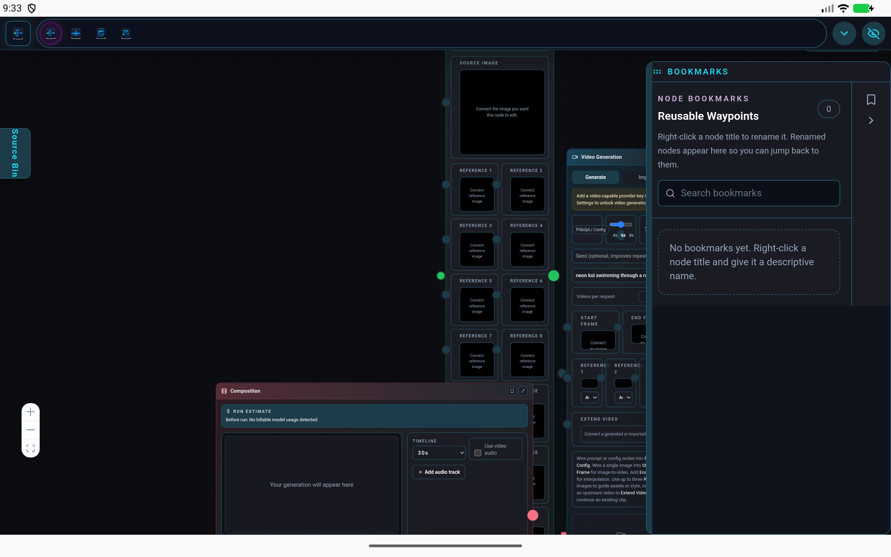

Signal Loom is a creative instrument, not a service. Node-graph Flow, a layered Image editor, print-ready Paper layout, and a Video timeline — one project, your own API keys, bought once. Each workspace is a full tool on its own; AI is a choice, not a requirement.

Each workspace is a genuine standalone tool — Image and Paper even save their own file formats (.slimg, .slppr) — and the .sloom project is the umbrella that unites all four. Switch tools without switching files: a clip you generate in Flow appears in Image, Video, and Paper automatically, from one shared project and source library.

The generative node graph is Signal Loom's center of gravity — wire providers into a graph once and every workspace downstream inherits the results.
Paint in Image, lay out a book in Paper, cut in Video. Import your media or make it by hand — you can build an entire project with zero AI and zero keys.
Each workspace is powerful alone; together is where they shine. There's no single prescribed way to use Signal Loom.
The opening move of a project: a Flow graph that generates the low-level consistency assets — the recurring objects, props, and environments you reuse everywhere — so scenes stay visually consistent from shot to shot. It also tours most of the workspace.
Prompt and Color Palette / Swatch nodes drive Image Generation across four providers at once — Atlas (Seedream v4.5), BytePlus (bytedance/seedream), Google (gemini-3-pro-image) and Black Forest Labs (FLUX) — and the results collect into an Asset Package and the shared Source Library. Portals carry shared style and colour tokens across the graph; two Vision Verify nodes run a Gemini vision model to check each result against the reference (✓ TRUE / ✗ FALSE) into Value Monitors; and several nodes are collapsed to their minimal size while every connection stays wired.
Signal Loom has no account and no servers of its own. You connect the AI providers you already pay for with your own keys — your keys and your work stay on your device, and you talk to the providers directly. And if you'd rather work without AI, skip this panel entirely: nothing else in the studio depends on it.
Mask a region, describe the change, and edit with reference-guided models — billed to your own provider account.
Reference images and masks work wherever the model runs — through a direct key or a cloud gateway.
Projects are files you keep. No analytics. Nothing leaves your device except the request you choose to send.
A full layered raster editor with a real pressure-, tilt-, and rotation-sensitive brush engine — then mask a region, describe the change, and let a model render it in place. One canvas does both.


The same project, the same four workspaces — touch- and S Pen-ready on a phone, a full desktop layout in Samsung DeX, and game-controller support for fast, eyes-up control.


Turn on the LAN host and your phone serves the full desktop interface to any browser on your network. It's the same project, syncing both ways — and a one-tap Working here ⇄ Phone baton hands the edit lock between devices so the two screens never collide.
Pair an Xbox, PlayStation, or generic pad over Bluetooth and drive the studio with physical buttons and sticks — fully remappable per workspace. Scrub keyframes in Video, drop frames in Paper, switch tools in Image, all eyes-up. Especially handy on Android & DeX. See the bindings →
A perpetual license — no subscription, no in-app purchases, no ads. Signal Loom doesn't include model usage; you bring your own provider keys and pay them directly for what you use.
Signal Loom does not include AI usage or credits. You supply your own provider accounts/keys, and any model usage is billed to you by that provider under their terms.
The same four workspaces, native for Windows and Linux. There's no store taking a cut here — pay what feels fair and it goes straight to a solo dev who's pouring everything into this. (Android stays the $9.99 mobile build above.)
Signal Loom is source-available. Prefer to build it yourself or grab a free community build? It's all on GitHub — no judgment.